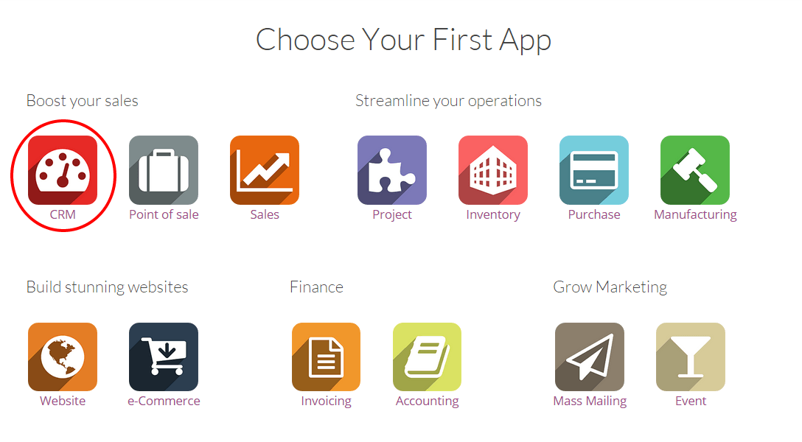

这种快速的一步一步的指南将引导您完成YuanCloud CRM，帮助您轻松处理您的销售渠道，时刻从线索到客户管理您的销售渠道。
配置
从`www.yuancloud.com/start <http://www.yuancloud.com/start>`__生成你的数据库，选择CRM 作为第一个app安装，填写表单，点击”马上创建“。你会自动直接到这个模块当数据库准备好后。
小技巧
你会发现，客户关系管理模块的安装创造了子模块即时通讯，日历和联系人。为了使应用程序的每一个功能平稳运行，他们是强制安装的。
销售计划的介绍。
销售计划是一个有用的一步一步的指导，帮您实现您的销售渠道，并方便的确定自己的销售目标。我们强烈建议您首次使用YuanCloud CRM时遵循要求按指南的每一步走。您的输入定制是完全个人的，并准备引导你的工作。因为它不与后端交互，你可以自由适应任何你觉得需要的细节。
您可以从CRM模块内的任何地方通过点击位于右上侧屏幕进度条使用销售计划。它会告诉你，你离你的销售计划有多远。
建立你的第一个销售团队
创建一个新团队
一个直接销售团队在一开始时就默认被建立了。你可以使用它或建一个新的。参照：如何创建新的销售团队? for more information.
分配销售人员到你的销售团队
当你的销售团队被建好后，下一步是链接你的销售人员到你的团队，以便他们能够处理他们应该收到的机会。比如，在你的公司里，Tim卖产品，John 卖维护合同，他们会被分配到不同的团队并且只收到对他们有意义的机会。
在YuanCloud CRM 里，你能快速生成一个新用户并直接分配给一个销售团队.从**仪表盘**，点击你选择的销售团队的**更多**，然后点击**设置**。在**分配**中，点击**生成**来增加一个新的销售给这个团队。
从**生成：销售员**跳出窗口(如下截屏)，你可以分配某人到你的团队。
或者你的销售人员已经存在于系统中，你只需在下拉框中点击它，他会被分配到团队中。
或者你还想分配一个不在系统中的新的销售人员 - 可以从销售团队中快速建立一个新的用户。只需输入你的新销售人员的名称，然后单击创建(见下文)，以创建一个新用户进入系统，然后直接将其分配给你的团队。新用户将收到一封电子邮件邀请来设置自己的密码，登录到系统中。参见：DOC：[UNKNOWN NODE title_reference]
建立你的销售管道
现在已经创建了您的销售团队并把您的销售人员都链接到它，你将需要设置您的管道 -通过你的销售周期创建你的团队生成，资格及关闭机会的过程。请参阅文档：DOC：[UNKNOWN NODE problematic]../../销售团队/设置/组织_管道`来定义管道的阶段。
将获取邮件转为商机的配置
在YuanCloud CRM，一种在您的销售团队中创建机会的方法是创建一个通用的电子邮件地址作为触发。例如，如果你的团队直接的个人电子邮件地址`direct@mycompany.example.com <mailto:direct@mycompany.example.com>`__，每封电子邮件会自动创建一个新的机会进入销售团队。
参照: 如何通过邮件收取生成相关线索? 进行配置.
线索自动分配
如果您的公司每天产生大量的线索，自动化分配将是非常有用的，这样系统会自动分配所有的机会到正确的部门。
请参阅文档：DOC：[UNKNOWN NODE problematic]../../引线/管理/自动分配`了解更多信息。